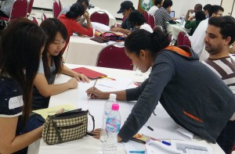

(Bangkok, September 5) GESTISS started AIT summer school on Sep. 4. This school is scheduled every week end until Sep. 27.
{kind=link}
5th Monthly Tutorial ”The Traffic in Dhaka”
Solutions for the traffic issues in Dhaka
Date: 21th September 2014, at 13:00-17:00
Venue: Dw601, Komaba Research Campus, The University of Tokyo
We invite Mr. Tamaoki Watanabe (ALMEC Corporation) and discuss with on going project for Dhaka traffic issues.
Agenda Table of Monthly Toutorial 5th
＜特別講義＞最強の交通渋滞、ダッカの交通問題への取組実態
日時：2014年9月21日（日）13:00-17:00(agenda)
場所：Dw601, 東京大学駒場キャンパス
都市の発展／機能向上に重要なkeyの一つ交通問題への取組み実例を、アジア最強の交通渋滞都市ダッカの実例を基にデスカッションします。
AIT Summer School 2014
Introduction to spatial information engineering
September 04, 05, 19, 20, and 21
Introduction to Global Navigation Satellite System
September 11, 12, 13, 25, 26,and 27
2014 National Science and Technology Fair in Thailandタイ科学技術博覧会2014
2014 National Science and Technology Fair to be held in Chiang Mai during 12th – 18th August 2014 at the Chiang Mai International Convention and Exhibition Center. GESTISS has a booth in Japan pavilion to introduce G-SPASE.
{kind=link}
チェンマイで開催されているタイ科学技術博覧会2014に、GESTISSとして出展し、G-SPASEの活動を紹介しています。2014年8月12日から28日まで開催です。日本パビリオンの中にブースがあります。
G-SPASE second summer has come
 (Komaba Research Campus, the University of Tokyo, Aug. 4-6) For all of us concerned about the future of the space technology development and the social infrastructure improvement in whole the world. GESTISS encouraged participated students and relevant experts to brush up their skill and knowledge on the G-SPASE Summer School. More than 30 participants shared a knowledge and discussed for a system design.
(Komaba Research Campus, the University of Tokyo, Aug. 4-6) For all of us concerned about the future of the space technology development and the social infrastructure improvement in whole the world. GESTISS encouraged participated students and relevant experts to brush up their skill and knowledge on the G-SPASE Summer School. More than 30 participants shared a knowledge and discussed for a system design.